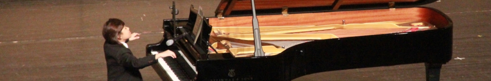

Before research
I performed 24 solo recitals and appeared on television more than 70 times across China and Taiwan. I still perform, compose, and produce, and that musician’s perspective shapes both the research directions I pursue and the approach I take.

About
- Computer Science student at UC Berkeley and NTHU.
- Berkeley AI Research (BAIR), advised by Prof. Trevor Darrell and David M. Chan.
- NTU Music and AI Lab, advised by Prof. Yi-Hsuan (Eric) Yang.
- Previously at CNMAT, advised by Prof. Carmine-Emanuele Cella.
- # grounded music understanding in audio-language models
- # controllability for musicians
News
- PitchBench accepted to NeurIPS 2026 E&D.
- MuSP-Bench accepted to ISMIR 2026 Late Breaking Demo.
- Anamnesis accepted to EMNLP 2026 System Demonstrations.
- InstructFX2FX accepted to DAFx 2026 Demo.